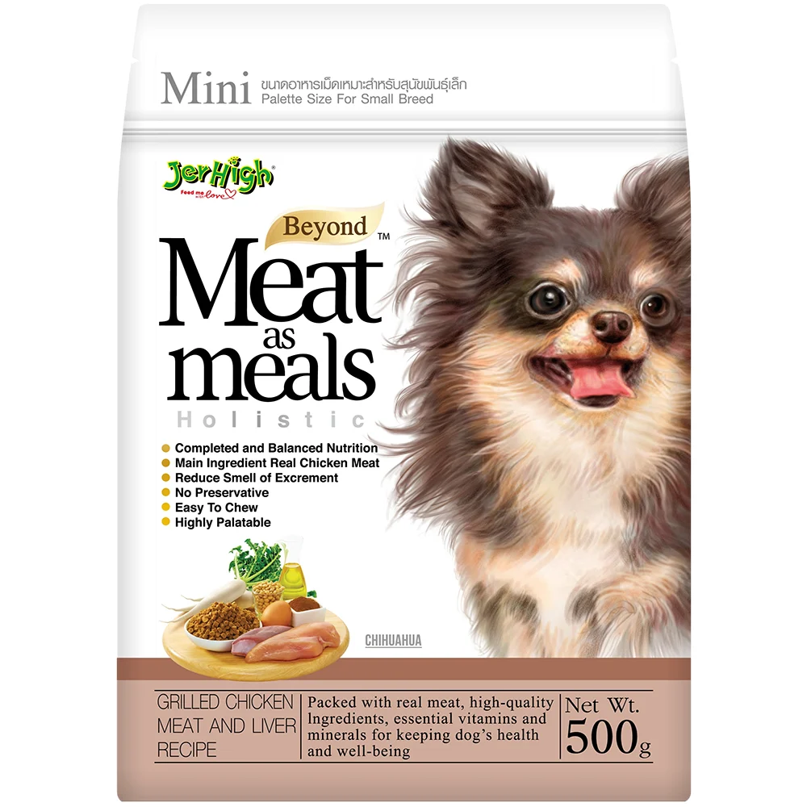

THỨC ĂN HẠT MỀM CHO CHÓ VỊ GAN GÀ
Thương hiệu: JERHIGH | Tình trạng: Còn hàng
275.000đ
Thông tin cơ bản:
Thức ăn hạt mềm cho chó vị thịt gan gà JERHIGH Meat as Meals Grilled Chicken Meat Liver Recipe dành cho tất cả các giống chó từ bé đến trưởng thành.
Số lượng sản phẩm:
MÔ TẢ CHI TIẾT
Lợi ích chính:
Holistic chứa các chất dinh dưỡng có lợi cho chó như Glucosamine và Chondroitin. Là những chất dinh dưỡng cần thiết để xây dựng sụn và khớp thêm khỏe mạnh. Beta-Glucan giúp tăng cường miễn dịch trong cơ thể các khoáng chất và Limonite thiết yếu giúp hấp thụ mùi phân của chó, lên đến 80% với một chất dinh dưỡng đầy đủ và hương.
Hướng dẫn sử dụng:
- Chó nhỏ dưới 5 kg: 45-95g/bữa.
- Chó nhỡ >5-10 kg: 96-160g/bữa.
- Chó lớn >10-25 kg: 161-300g/bữa.
Hãy luôn chuẩn bị nước uống sạch cho chó của bạn. Khi chuyển đổi thức ăn mới cho chó, hãy trộn thức ăn của JERHIGH Meat as Meal với chế độ ăn hiện tại bắt đầu bằng một lượng nhỏ và tăng dần trong vòng 7 ngày đầu sử dụng.
ĐÁNH GIÁ SẢN PHẨM